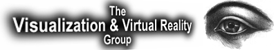

This is a "ressurection" of a VRML demo created in 1998.
This VRML demo has been the result of contributions from virtually all
members of the VVRG group. In addition we have "borrowed" media
assets from a number of sources. In particular the original geometry of
the building which comprises the main VRML environment came from the
Virtual Music
Museum (with their kind permission). We substantially redecorated,
and added the elevator controls.
Demo Design and Implementation:
- Sandy Ressler and Brian Antonishek
VRML Objects:
- NIRVE sphere: John Cugini
- Air bag car seat and VRML child: export from Transom Jack
- Robot and Miter Saw: Qiming Wang
- Chain and Falling Man: Afzal Godil
- Anthropometric Head: Sandy Ressler, Greg Seidman
- Chair in webmetrics room: 3name3D
Textures:
- Photographs of group members: Sandy Ressler
- WebMetrics logos: Bill Welsh
Music and Sound Effects:
- Elevator Music: "Carnival" by Natalie Merchant
- Elevator door opening - Star Trek Next Generation
- Falling Man - Homer Simpson
- Chain - Monty Python